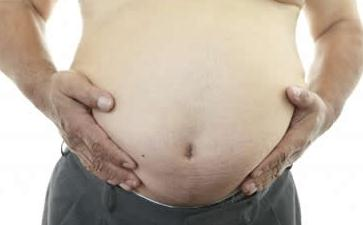

1、动物被屠宰时，因肉体剧烈痛楚而引发恐怖、怨恨、悲伤等等情绪，在遗体中产生的毒素，经由嘴巴进入人的胃肠，消化后溶入血液，再由血液流遍全身，使各部器官肌肉的细胞中毒、腐化，进而生病、死亡。
美国华盛顿心理实验室曾做过一种心理变化对生理
A、动物被剥夺生命的极度
B、负面情绪会在身体细胞中产生毒素。所以绝大部份的身病其实起源于心病。反之，正面的情绪如平静、安详、满足、
2、动物被屠宰而死亡后，尸体中的细胞即刻停止工作，肉中的蛋白质就会凝结而分泌出自我分解的酵素，使肌肉腐烂，产生毒性，称为 “尸毒”。然后吃进肚里的肉，又在人类先天不适应消化肉类的肠壁中缓缓前进，大概需要五天才到达排泄器官而放出体外（素食食物只需一天半）。这些腐肉的毒慢慢侵蚀肠壁，最后形成直肠癌、结肠癌等等不治症。这种尸毒即使经过烹饪处理也不能消灭，成了消化系统胃肠癌症的第一祸首。
3、近代人口急速成长，物质文明快速进步，使得肉食的需求大量增加。禽畜的生养过程，大多在大量繁殖、大量喂养、大量输送、大量屠宰的方式下进行。这些动物从出生、长大、到被屠杀至死的短暂一生，完全在推挤、压迫、关闭、捆绑、悬吊、黑暗、强光、污臭的环境中度过，躯体饱受种种凌虐的伤痛，心理上必然充满著种种恶劣的情绪，因而刺激细胞的病变，分泌毒质，发生潜在的疾病。吃了病肉、毒肉，而人能不生病、不中毒，才是怪事。
4、科学家们把人吃肉称作“食物链的末端”。植物吃阳光、空气、水；动物吃植物；大动物吃小动物；人吃动物。现代全世界的农田和果园，都喷洒有毒的化学药剂来灭害虫。这些农药转移到吃植物的动物体内，永久存在脂肪之中。肉食动物又把素食动物肉中的农药毒素消化进自己的脂肪内。人吃动物肉，让自己变成农药残毒的最后保存者。根据科学调查，肉类当中的杀虫剂量，比蔬菜、水果、青草中所含毒量，高出十三倍。农药是致癌的主要病因。而人吃蔬菜和水果，却可以借清洗或削皮的方法，去除农药的残毒，以避免中毒或减至最轻微的程度。另外，为了加速养殖过程中牲畜的成长，牲畜被迫喂食开胃药、抗生素、镇定剂、化学混合饲料，或注射荷尔蒙催生剂。这些化学药剂也都是强烈的致癌物质。
5、等待出售的肉类，在储存期间往往日久而腐败变色，为了维持新鲜的肉色，许多肉贩会擅自添加硝酸盐和亚硝酸盐等化学防腐剂，被吃进人体后也变成致癌的强烈毒素。除了导致癌症之外，人类吃肉过多，会使负责解毒的肝脏负担过重，疲劳过度，失去解毒功能，而引起肝退化、肝炎、肝硬化、肝癌等。
从健康角度看素食素食是养生之道研究指出，人类的消化系统和牛马羊一样，比较适合素食。因为肉食中的动物脂肪，含有大量的饱和脂肪酸，长期食用容易引起胆固醇过高及心脏血管方面的疾病。同时也有致癌的可能性，而素食可以净化血液，预防便秘及痔疮的产生，养颜美容，并且安定情绪。和肉食比起来，素食在养生方面实在益处多多。难怪素食蔚为流行，成为现在代人崇尚健康的养生之道。
第一：因植物食品中不含有对心血管构成威胁的有害物质，因此素食可减少血管疾病的发生。
最近美国公布的一个研究报告证实，堵塞的冠状动脉，可以通过素食、运动、服药和减少精神压力等综合措施重新通畅，而不需依赖手术打通；单靠素食也能达到同样的目的。且在以后十年中不发生使心脏病猝发的冠状动脉病：而不能坚持素食者，则出现了冠状病重度再发。
第二：植物性饮食，包括：全谷类、豆类、蔬菜及水果，有保护人体降低罹患癌症机会的作用。最近研究指示，
第三：素食可减轻肾脏负荷：素食对肾功能不健全的肾脏病患者来讲，能起到让肾脏【休息】的作用：肾脏病患者改为素食，外加乳制品的摄入，既可减轻肾脏负担，又不减少蛋白质的摄入量，实为一举两得。
第四：素食对预防骨质疏松症亦有好处。众所周知，老年人【尤其绝经后的妇女】为了防止骨质疏松，提倡多吃含钙质的食品，而维生素C有利于钙质的吸收。很多植物食品【如绿色蔬菜，
第五：许多研究显示健康的素食能减少罹患心脏病、高血压、糖尿病和肥胖等慢性退化性疾病。例如：